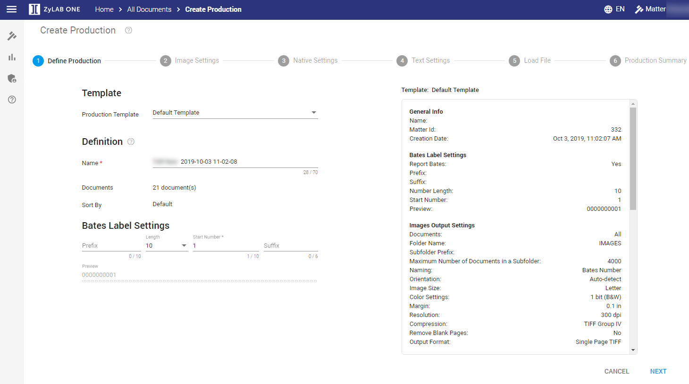

Note: Make sure you haven’t missed any relevant documents; use Assisted Review to check the data one last time. More information about this topic can be found under Assisted Review with tagged documents on Assisted Review.
Once you’ve concluded your investigation, you can produce a report of your findings.
|
|
Note: Make sure you haven’t missed any relevant documents; use Assisted Review to check the data one last time. More information about this topic can be found under Assisted Review with tagged documents on Assisted Review. |
First, select all relevant documents by using the search bar to only search for documents with the tag ‘Relevant’. You can also use a facet that displays all tags and select the tag ‘Relevant’, or navigate to Overview to select all relevant documents from there. Step one of the production wizard. This is where you create a new production.
In the Document List, select the settings icon 
Then, select Productions > Create for Selection/Documents. For more information on starting a production—see Productions.

Template
Select a Production Template.
Create, modify, delete and use production templates to export processed data from a matter.
In the last step of the Production Wizard, you can save the modified (default) production template with a new name and use that template for your next production.
Definition
Define a production Name.
Number of Documents originates from Document List.
Sort By also originates from Document List.
Bates Label Settings
Define the unique identifying bates numbers that are assigned to each page of a produced document. These numbers provide prove that no pages were skipped during production. They can also be used for reference and retrieval.